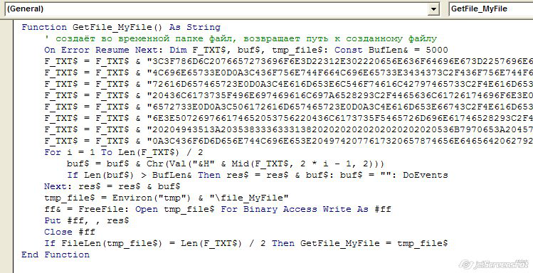

Функция FileToVBAFunction предназначена для сохранения произвольного файла в виде VBA кода. В любой момент вы можете вызвать сгенерированную функцию - она моментально создаст во временной папке необходимый файл, и вернет путь к созданному файлу. Основное применение функции - сохранение небольших файлов (в основном, графических - иконок и маленьких картинок) в книге Excel. Для того, чтобы прикрепить большие файлы к книге Excel, или если надо управлять вложенными файлами, При необходимости, такой файл в любой момент можно извлечь, просто вызвав созданную функцию. Примеры использования функции FileToVBAFunction: Sub ПримерИспользования_FileToVBAFunction() ' преобразовываем заданный файл в VBA функцию txt$ = FileToVBAFunction("D:\Distr\аватары\joda.jpg", "joda") ' выводим созданную функцию в окно Immediate Debug.Print txt$ End Sub Sub Выбрать_Файл_и_Скопировать_Его_в_Виде_Кода_VBA_в_Буфер_Обмена() ' выводим диалоговое окно выбора файла filename = Application.GetOpenFilename("Любые файлы небольшого размера (*.*),", , _ "Выберите файл для загрузки в проект VBA", "Загрузить") If VarType(filename) = vbBoolean Then Exit Sub ' пользователь отказался от выбора файла ' преобразовываем заданный файл в VBA функцию txt$ = FileToVBAFunction(filename, "MyFile")
' копируем полученный код VBA-функции в буфер обмена With GetObject("New:{1C3B4210-F441-11CE-B9EA-00AA006B1A69}") .SetText txt$ .PutInClipboard End With End Sub
Запустив второй макрос (копирующий код созданной фунции в буфер обмена),  Строки, содержащие данные файла, получаются очень длинные (около 1000 символов), Поскольку в одной строке кода VBA мы можем сохранить около 500 байтов информации, Код функции FileToVBAFunction: Private Function FileToVBAFunction(ByVal filename$, Optional ByVal name$ = "noname") As String On Error Resume Next: Err.Clear: Const BYTES_PER_ROW& = 480 Dim F_Content$ ff& = FreeFile: Open filename$ For Binary Access Read As #ff FS& = LOF(ff): txt$ = String(FS&, Chr(0)) Get #ff, , txt$: Close #ff
F_Content$ = F_Content$ & "Function GetFile_" & name$ & "() As String" & vbNewLine F_Content$ = F_Content$ & "' создаёт во временной папке файл, возвращает путь к созданному файлу" & vbNewLine F_Content$ = F_Content$ & "On Error Resume Next: Dim F_TXT$, buf$, tmp_file$: Const BufLen& = 5000" & vbNewLine
For i = 1 To Len(txt$) r& = Asc(Mid(txt, i, 1)) res$ = res$ & IIf(Len(Hex(r)) = 1, "0", "") & Hex(r) If i Mod BYTES_PER_ROW& = 0 Then F_Content$ = F_Content$ & "F_TXT$ = F_TXT$ & """ & res$ & """" & vbNewLine res = "": DoEvents End If Next If Len(res) Then F_Content$ = F_Content$ & "F_TXT$ = F_TXT$ & """ & res$ & """" & vbNewLine
F_Content$ = F_Content$ & "For i = 1 To Len(F_TXT$) / 2" & vbNewLine F_Content$ = F_Content$ & "buf$ = buf$ & Chr(Val(""&H"" & Mid(F_TXT$, 2 * i - 1, 2)))" & vbNewLine F_Content$ = F_Content$ & "If Len(buf$) > BufLen& Then res$ = res$ & buf$: buf$ = """": DoEvents" & vbNewLine F_Content$ = F_Content$ & "Next: res$ = res$ & buf$" & vbNewLine F_Content$ = F_Content$ & "tmp_file$ = Environ(""tmp"") & ""\file_" & name$ & """ : Kill tmp_file$" & vbNewLine F_Content$ = F_Content$ & "ff& = FreeFile: Open tmp_file$ For Binary Access Write As #ff" & vbNewLine F_Content$ = F_Content$ & "Put #ff, , res$" & vbNewLine F_Content$ = F_Content$ & "Close #ff" & vbNewLine F_Content$ = F_Content$ & "If FileLen(tmp_file$) = Len(F_TXT$) / 2 Then GetFile_" & name$ & " = tmp_file$" & vbNewLine F_Content$ = F_Content$ & "End Function" & vbNewLine FileToVBAFunction = F_Content$ End Function
|